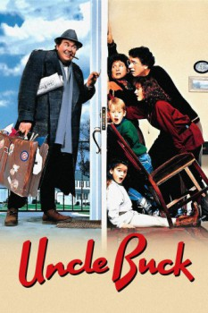

Country:United States, 100 minutes
Spoken languages:English
Genres:Comedy, Drama, Family
Director(s):John Hughes
Writer(s):John Hughes
Video Codec:Unknown
Number: 5743

Certification:PG
Storyline:
Buck Russell, a lovable but slovenly bachelor, suddenly becomes the temporary caretaker of his nephew and nieces after a family emergency. His freewheeling attitude soon causes tension with his older niece Tia, loyal girlfriend Chanice, and just about everyone else who crosses his path.
Cast:
John Candy (as Buck Russell), Jean Louisa Kelly (as Tia Russell), Gaby Hoffmann (as Maizy Russell), Macaulay Culkin (as Miles Russell), Amy Madigan (as Chanice Kobolowski)
Medium: Media file,
Location: D:\Uncle Buck\Uncle Buck.mp4
Loaned: No
Aspect ratio: Unknown